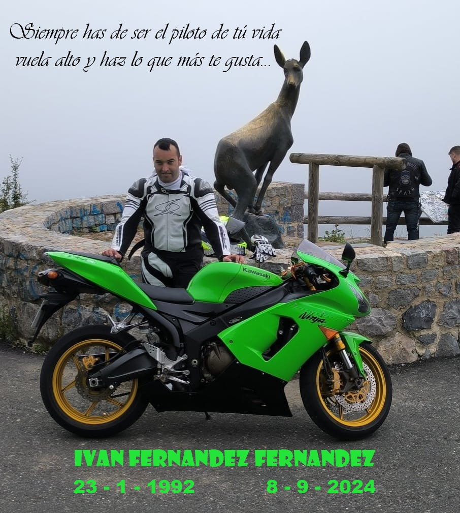

Como motociclista, tu seguridad es primordial. El año pasado se producieron casi 300 muertes en carretera(entre ellos un amigo), queremos disminuir esa cifra.

Consejos Fundamentales de Seguridad
Usa siempre casco homologado y certificado
Viste ropa protectora: chaqueta, pantalones, botas y guantes
Mantén tu motocicleta en perfectas condiciones mecánicas
Respeta los límites de velocidad
Sé visible: usa ropa reflectante y mantén las luces encendidas
Equipo de Protección Esencial
El equipo adecuado puede salvar tu vida. Invierte en:
Casco integral que cubra toda la cara
Chaqueta con protectores en hombros y codos
Pantalones resistentes con protección en rodillas
Botas que protejan tobillos
Guantes especiales para motociclistas
Técnicas de Conducción Segura
Mantén una distancia segura con otros vehículos
Anticipa movimientos de otros conductores
Evita conducir bajo condiciones climáticas adversas
Nunca conduzcas bajo los efectos del alcohol o drogas